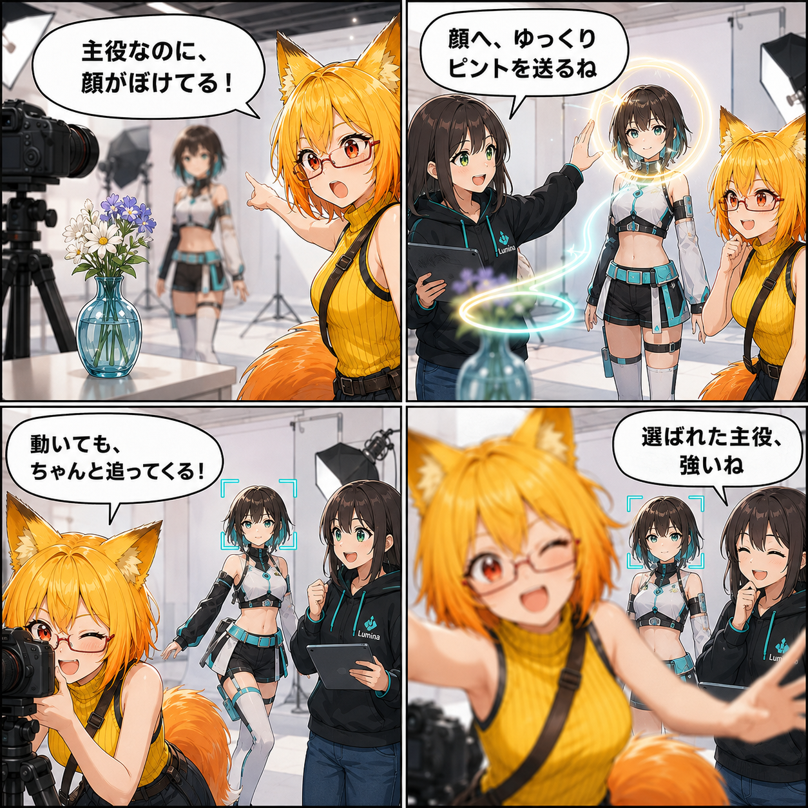

ピントは、選んだ主役を離さない。顔AFとラックフォーカスを加えた日
撮影中にアバターが動いても主役を見失いにくい、アバター追従・顔追従のフォーカスモードを追加しました。
main ブランチでは集計期間内に8件のコミットがありました。終了時点のHEADは 664c7f9（Meta XR依存を撤去しEditorハンドルリークを解消）、期間全体では104ファイル、7,647行追加、1,037行削除です。Viewer作業ツリーはcleanで、未コミット差分を実績へ含めていません。集計期間は 2026-09-04 03:00:00 JST から 2026-09-05 02:59:59 JST までです。
選んだアバターを、ピントの基準にする
これまでの手動距離に加え、中央AF、選択アバターAF、選択顔AFを切り替えられるようにしました。選択アバターAFは胸付近、選択顔AFはHumanoidの頭部を基準にカメラからの距離を追跡します。アバターが撮影中に少し移動しても、選んだ主役へピントを合わせ続けられます。
顔へ、ゆっくりピントを送る
「顔へラックフォーカス」を使うと、現在のフォーカス距離から選択中アバターの顔まで、既定では約1.2秒かけて滑らかにピントを移します。急に切り替えるのではなく、映像らしい見せ方を作り、その後は顔追従へ移る仕組みです。
レンズと光の味も選びやすく
24mm、35mm、50mm、85mm、135mmのレンズプリセットを追加し、焦点距離・絞り・画角をまとめて切り替えられるようにしました。玉ボケの強さやしきい値、Soft / Black Mist / Glow / Dreamのソフトフィルター、ミニチュア撮影プリセットも同じ撮影効果の導線へ加えています。
技術的なポイント
- フォーカスモードは手動・中央・選択アバター・選択顔の4種類
- 選択アバターまたは顔のカメラ前方距離を毎フレーム追跡
- ラックフォーカスは滑らかな補間後、選択顔追従へ移行
- 5種類のレンズプリセットが焦点距離、絞り、画角、玉ボケを連動
- ソフトフィルターをOffへ戻すと適用前の画面効果値を復元
- デスクトップとVRの両方へ同じ撮影操作を追加
ほかにも進んだこと
- 路面の濡れ、積雪、時間進行、月齢・日食、ステージ光線など環境演出を拡張
- 読み込みと常駐処理の性能を改善
- VRAS β0.8のバージョン情報とCHANGELOGの管理基盤を追加
- 未使用だったMeta XR Core依存を撤去し、EditorのProcess handle増加を解消
補足
顔AFは人物認識ではなく、現在選択されているHumanoidアバターの頭部ボーンを基準にします。選択対象がない場合に架空の顔を探したり、カメラ自体を自動で動かしたりする機能ではありません。
4コマの裏話
小道具からアバターへピントを渡す「主役争奪戦」にしました。成功の説明で閉じず、最後にろひが割り込んでも、選択されたアバターの顔が主役のままという視覚的なオチで、追従先が明確なことを表しています。
まとめ
撮影効果の数字を調整するだけでなく、「誰を主役にするか」を選び、その主役へピントを送り、動きにも追従できる撮影操作へ進みました。レンズやフィルターのプリセットと組み合わせることで、静止画にも映像にも意図のある画作りをしやすくなります。
本日のひとこと： 主役に決めたら、ピントは最後まで。